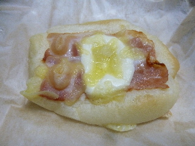
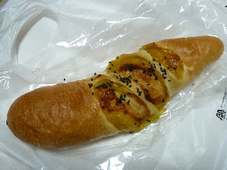
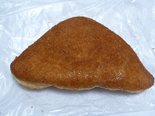

パン工場のWチーズベーコンのチーズが美味しい。
2015/06/28

まんなかに白いチーズがあります。何チーズでしょうか？
カマンベールかな。これが美味しかったです。
チーズに塩味が効いてて、おつまみのチーズみたいでした。
ワインやビールと一緒にいただきたいです。
島根県出雲市天神町151 イオン天神店内
●イオンスタイル出雲が出来たので閉店しました。
2015/06/28

まんなかに白いチーズがあります。何チーズでしょうか？
カマンベールかな。これが美味しかったです。
チーズに塩味が効いてて、おつまみのチーズみたいでした。
ワインやビールと一緒にいただきたいです。
2015/01/01

大雪の中、イオン出雲天神店に買い物に行きました。
お買い得な商品や、福袋があってよかったです。
いっしょにパンも買いました。鳴門金時フランスです。
このフランスパン美味しいなー。お芋も甘くていいんですけど、フランスパンが美味しいのが一番いいなー。
大きいパンなので、たっぷり味わえました
2014/10/05

新しく出来た？っていうのか、イオンの仮店舗のイオン出雲天神店でパンを買いました。
ハムチェダードーナッツです。（170円）
いい色で揚がっていますね。
ハムもチーズも濃い味でインパクトのあるドーナッツでした。